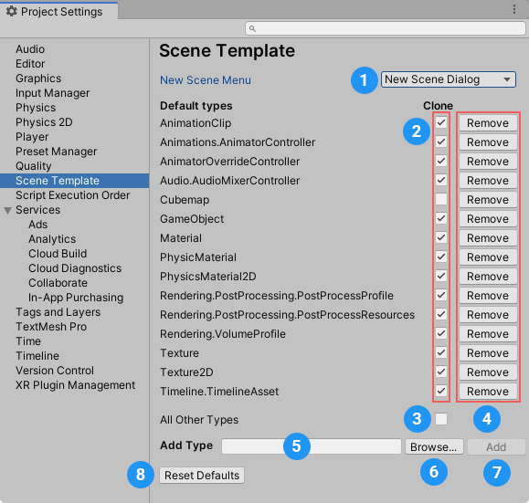

要访问场景模板项目设置，请打开 Project Settings 窗口（菜单：Edit > Project Settings）并从类别列表中选择 Scene Template。

场景模板项目设置面板
新场景设置 (1) 控制从 File 菜单：(File > New Scene) 或使用 Ctrl/Cmd + n 快捷方式创建新场景的行为。
| 选项： | 描述： | |
|---|---|---|
| New Scene menu | ||
| New Scene Dialog | 打开 New Scene 对话框。 | |
| Built-in Scene | 在不打开 New Scene 对话框的情况下创建新场景。新场景是项目基本模板的副本。 | |
Default Types 设置控制 Unity 在从场景模板创建新场景时是否默认克隆特定类型的资源。
要使 Unity 默认克隆特定类型的资源，请为列表中的该资源类型启用 Clone 选项 (2)。
要使 Unity 默认引用特定类型的资源，请为列表中的该资源类型禁用 Clone 选项 (2)。
要为列表中未显示的资源类型设置默认克隆/引用行为，请为 All Other Types (3) 启用/禁用 Clone 选项。
要从列表中删除资源类型，请单击 Remove 按钮 (4)。
要将资源类型添加到列表中，请执行以下操作之一： - 在 Add Type 字段 (5) 中，输入特定资源类型。 - 单击 Browse按钮 (6) 打开搜索窗口，您可以在其中查找并选择特定的资源类型。
然后单击 Add 按钮 (7) 将该资源类型添加到列表中。
要恢复为 Unity 的默认资源类型列表和设置，请单击 Reset Defaults 按钮 (8)。